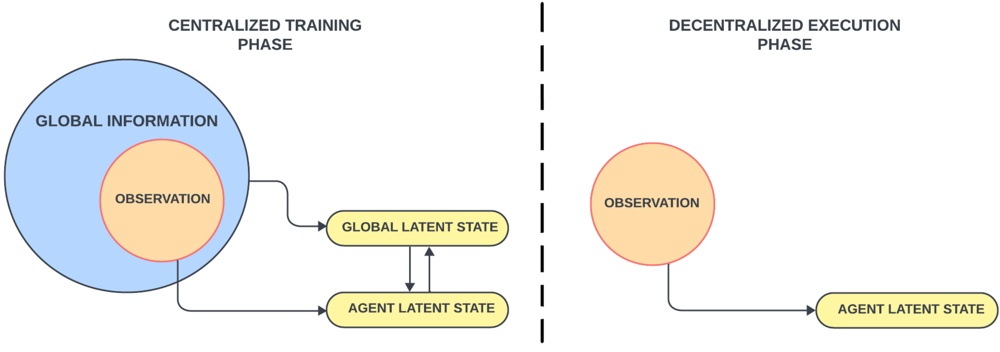
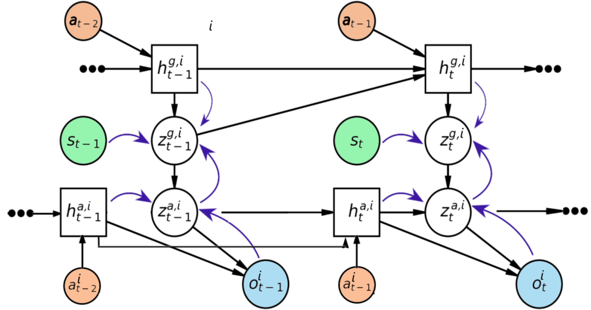
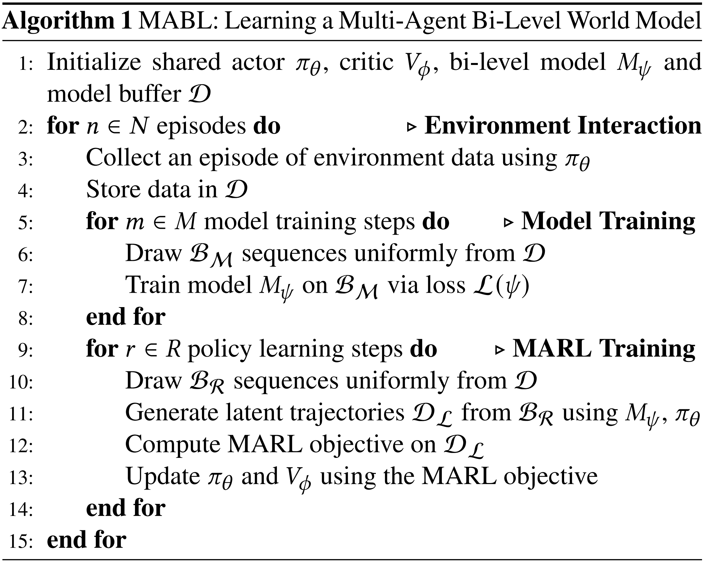

MABL
World Model Learning
The global latent states (top-level) to encode relavant global information. The agent latent states (low-level) encodes agent-specific local information. MABL uses the former to inform the learning of the latter.

Each agent has a bi-level model with shared parameters to scale to settings with a large number of agents
| Model |
Type |
Definition |
Distribution Family |
| Recurrent Model |
Generation |
Global: htg, i=fψg, i(ht−1g, i, zt−1g, i, at−1)
Agent: hta, i=fψa, i(ht−1a, i, zt−1a, i, at−1i) |
Deterministic |
| Representation Model |
Inference |
Global: ztg, i∼qψ(ztg, i∣st, zta, i, htg, i)
Agent: zta, i∼qψ(zta, i∣oti, hta, i) |
Categorial |
| Transition Model |
Generation |
Global: ztg, i∼pψ(ztg, i∣htg, i)
Agent: zta, i∼qψ(zta, i∣hta, i, ztg, i) |
Categorial |
| Observation Model |
Generation |
oti∼pψ(oti∣hta, i, zta, i) |
N(μψ(hta, i, zta, i), I) |
| Reward Predictor |
Generation |
rti∼pψ(rti∣hta, i, zta, i) |
N(μψ(hta, i, zta, i), 1) |
| Termination Predictor |
Generation |
γti∼pψ(γti∣zta, i, ztg, i, hta, i, htg, i) |
Bernoulli |
| Available Action |
Generation |
Ats, i∼pψ(Ats, i∣zta, i, ztg, i, hta, i, htg, i) |
Bernoulli |
| Action Decoder |
Auxiliary |
ati∼pψ(ati∣zta, i, ztg, i, hta, i, htg, i) |
|

The recurrent, representation, transition and observation model is trained to maximize the ELBO
= = ≥ = = = lnp(o1:Ti∣a0:T−1)lnz1:Ta, i, z1:Tg, i∑p(o1:Ti, z1:Ta, i, z1:Tg, i∣a0:T−1)q(z1:Ta, i, z1:Tg, i∣o1:Ti, s1:T, a0:T−1)/q(z1:Ta, i, z1:Tg, i∣o1:Ti, s1:T, a0:T−1)lnEz1:Ta, i, z1:Tg, i∼q(⋅, ⋅∣o1:Ti, s1:T, a0:T−1)[p(o1:Ti, z1:Ta, i, z1:Tg, i∣a0:T−1)/q(z1:Ta, i, z1:Tg, i∣o1:Ti, s1:T, a0:T−1)]Ez1:Ta, i, z1:Tg, i[lnp(o1:Ti, z1:Ta, i, z1:Tg, i∣a0:T−1)−lnq(z1:Ta, i, z1:Tg, i∣o1:Ti, s1:T, a0:T−1)]Ez1:Ta, i, z1:Tg, i[lnt=1∏Tp(oti∣hta, i, zta, i)p(zta, i∣hta, i, ztg, i)p(ztg, i∣htg, i)−lnt=1∏Tq(zta, i∣oti, hta, i)q(ztg, i∣st, zta, i, htg, i)]Ez1:Ta, i, z1:Tg, i[t=1∑Tlnp(oti∣hta, i, zta, i)−lnp(zta, i∣hta, i, ztg, i)q(zta, i∣oti, hta, i)−lnp(ztg, i∣htg, i)q(ztg, i∣st, zta, i, hta, i)]Ez1:Ta, i, z1:Tg, i[t=1∑Tlnp(oti∣hta, i, zta, i)−DKL(q(⋅∣oti, hta, i) ∥ p(⋅∣hta, i, ztg, i))−DKL(q(⋅∣st, zta, i, htg, i) ∥ p(⋅∣htg, i))]
where the posterior q(z1:Ta, i, z1:Tg, i∣o1:Ti, s1:T, a0:T−1) is defined as
q(z1:Ta, i, z1:Tg, i∣o1:Ti, s1:T, a0:T−1)=t=1∏Tq(zta, i∣oti, hta, i)q(ztg, i∣st, zta, i, htg, i)s.t.⎩⎪⎪⎨⎪⎪⎧htg, i=f(ht−1g, i, zt−1g, i, at−1)hta, i=f(ht−1a, i, zt−1a, i, at−1i)
The ELBO loss can be approximated by sampled trajectory and utilize KL balance trick
LELBO(ψ)=t=1∑T−lnpψ(oti∣hta, i, zta, i)+DKLbalance(qψ(⋅∣oti, hta, i) ∥ pψ(⋅∣hta, i, ztg, i))+DKLbalance(qψ(⋅∣st, zta, i, htg, i) ∥ pψ(⋅∣htg, i))
Add the remaining generation items of world model to the objective likelihood p(o1:Ti, r1:Ti, γ1:Ti, A1:Ts, i∣a0:T−1)
p(o1:Ti, r1:Ti, γ1:Ti, A1:Ts, i∣a0:T−1)=t=1∏Tpψ(oti∣hta, i, zta, i)pψ(rti∣hta, i, zta, i)pψ(zta, i∣hta, i, ztg, i)pψ(ztg, i∣htg, i)pψ(γti∣zta, i, ztg, i, hta, i, htg, i)pψ(Ats, i∣zta, i, ztg, i, hta, i, htg, i)
Similar to observation model pψ(oti∣hta, i, zta, i), The loss function for these items are
| Loss Item |
Definition |
| Reward Predictor |
Lr(ψ)=−∑t=1Tlnpψ(rti∣hta, i, zta, i) |
| Termination Predictor |
Lγ(ψ)=−∑t=1Tlnpψ(γti∣zta, i, ztg, i, hta, i, htg, i) |
| Available Action |
LA(ψ)=−∑t=1Tlnpψ(Ats, i∣zta, i, ztg, i, hta, i, htg, i) |
the action decoder encourages the model to encode agent-specific information into the latent states. It does so by maximizing mutual information between each agent’s latent state and its action
La(ψ)=−t=1∑Tlnpψ(ati∣zta, i, ztg, i, hta, i, htg, i)
The overall objective can be written as
L(ψ)=LELBO(ψ)+Lr(ψ)+Lγ(ψ)+LA(ψ)+La(ψ)
Behavior Learning
MABL choose MAPPO for policy learning algorithm following the CTDE paradigm, where the actor take the agent latent state inferred by prior and posterior as input in training and execution, respectively.
